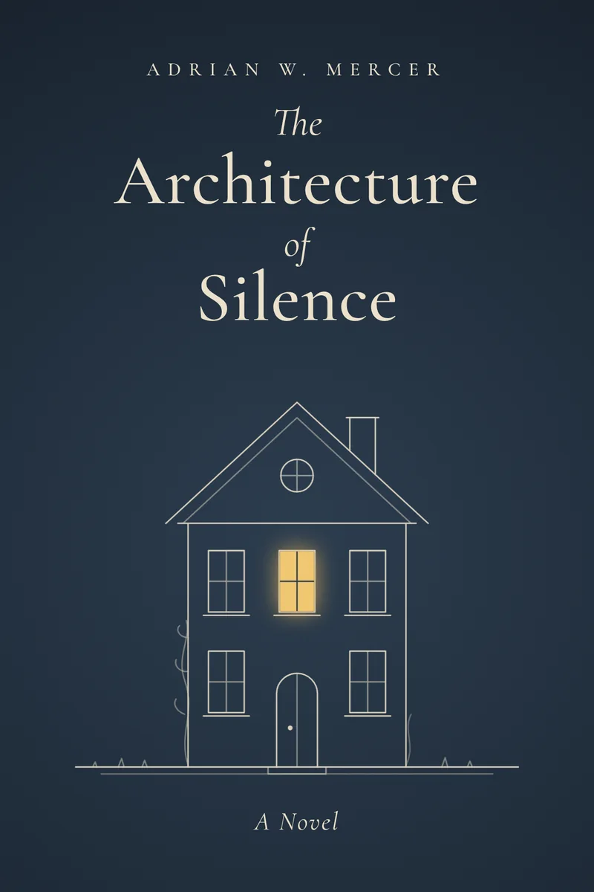

The shelf / 2012
The Architecture of Silence
A house can keep a secret for sixty years. A letter can give it away in one afternoon.
Synopsis
When Eleanor Hale inherits her grandmother’s house at Wren’s End, she expects damp, debts, and a quick sale. She finds instead a home preserved exactly as it was left in the winter of 1953: a table still laid for four, a clock stopped at ten to six, and under the stairs, a biscuit tin holding two hundred and twelve letters that were never posted.
As she reads them, a family history she thought she knew begins to come apart, and the house itself seems to hold its breath.
A novel about inheritance, secrets, and the rooms we close rather than face, The Architecture of Silence is Adrian W. Mercer’s acclaimed debut.
Excerpt · From Chapter One
The house at Wren’s End had been waiting for sixty years, and it had not tidied up.
Eleanor found the table laid for four. Plates, cups turned down on their saucers, a butter dish with its lid on, all of it under a fur of dust so even and so soft it looked deliberate, as though someone had dressed the room for a photograph and then forgotten to take it. The clock on the mantel had stopped at ten to six. Outside, the garden had grown up to the sills and pressed its leaves against the glass, as if it, too, wanted to see what happened next.
She had been told the house was empty. It was not empty. It was full to the ceiling with the particular silence of rooms in which something has been left unsaid.
Character cards
Who lives at Wren’s End.
Turn a card to meet the people, and the house, at the heart of the novel.
Reviews
What readers say.
Mercer writes about houses the way other novelists write about people: with tenderness, suspicion, and a long memory.
A debut of rare patience. The letters under the stairs will stay with you long after the last page.
Slow in the best way. I read the last fifty pages in one sitting and then sat in silence for a while.
My book club talked about the house for two hours. Nobody wanted to leave.
Keep reading
Also by Adrian W. Mercer.
The letterbox
A letter,
once a month.
Join Adrian’s monthly letter and read the first chapter of The Architecture of Silence free.
Your letter is open.
Chapter One is ready to read. The next letter arrives at the start of the month.
Download Chapter One (PDF)One letter a month. Unsubscribe anytime.